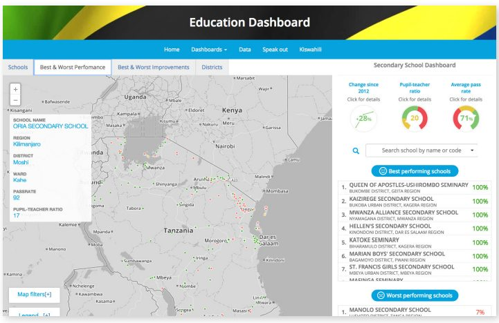
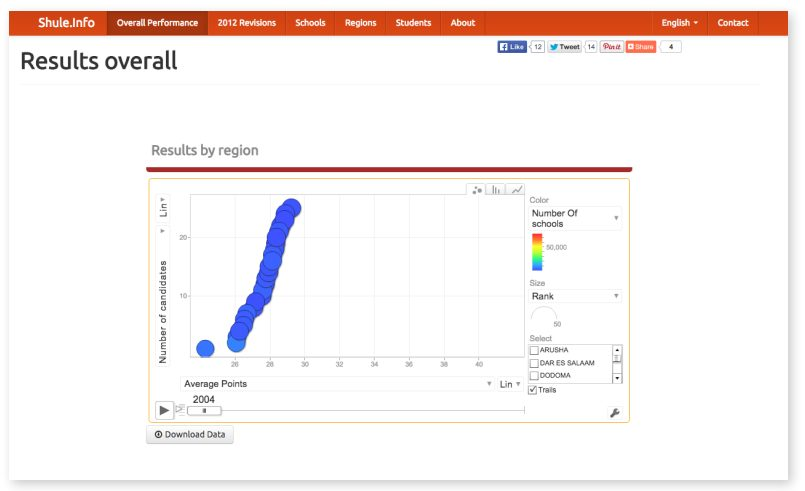

نرخ پایین قبولی در آزمون ملی در سال ۲۰۱۲ موجب اعتراض عمومی در تانزانیا شد، اما درک عمومی از زمینه گستردهتر (و در نتیجه توانایی تقاضا برای پاسخگویی) به دلیل فقدان اطلاعات در مورد بخش آموزش کشور محدود شد. دو پورتال که به تازگی تاسیس شدهاند، در تلاشند تا این وضعیت را اصلاح کنند و دادههای بیشتری را در مورد نرخ قبولی آزمون و سایر اطلاعات مربوط به مدارس به عموم ارائه دهند. اولین مورد، سیستم اطلاعاتی دادههای باز آموزش و پرورش (اداره آموزش و پرورش)، پروژهای است که توسط ابتکار دادههای باز تانزانیا ایجاد شدهاست، برنامهای دولتی که توسط بانک جهانی و اداره توسعه بینالمللی انگلستان (DFID) برای حمایت از انتشار، دسترسی و استفاده از دادههای باز پشتیبانی میشود. دوم، شول (shule.info)، توسط آرنولد میند، برنامهنویس، کارآفرین و علاقمند به دادهی باز رهبری میشد که تعدادی از تکنولوژیها و کسب و کارها را توسعه داد که بر تسریع تغییرات اجتماعی در تانزانیا متمرکز بودند. علیرغم چالشهای ناشی از نرخ نفوذ پایین اینترنت تانزانیا، این سایتها به آرامی در حال تغییر روش دسترسی شهروندان به اطلاعات و تصمیمگیری هستند. به طور کلی، این پروژهها شهروندان را تشویق میکنند تا خواستار پاسخگویی بیشتر از سیستم مدرسه خود و مقامات دولتی شوند.
- سیستمهای اطلاعاتی مانند شول (Shule) و سیستم اطلاعاتی دادههای باز آموزش و پرورش ابزارهای قابل هدف ارزانی هستند که میتوانند به سرعت و به آسانی توسط برنامهنویسان محلی اجرا شوند. هر دو سیستم اطلاعاتی در عرض دوتا سه هفته ساخته و راهاندازی شدند، اگرچه مجموعه دادههای مورد استفاده برای ساخت شول در طول چندین سال به صورت افزایشی حذف شدهبودند.
- در کشورهای با نفوذ پایین اینترنت، افزایش آگاهی در میان شرکتهای گردآوری داده، به ویژه در رسانهها، در مورد در دسترس بودن و استفاده از دادهی باز میتواند در پر کردن شکاف دسترسی و مشارکت موفق مردم حیاتی باشد. سازمانهای جامعه مدنی، هم محلی و هم بینالمللی، میتوانند نقش حیاتی در ترغیب استفاده از دادهی باز با افزایش آگاهی در میان شرکتهای گردآوری داده ایفا کنند.
- شول و سیستم اطلاعاتی دادههای باز آموزش و پرورش مزایای هماهنگی و همکاری بین طرحهای دادهی باز دولت و طرحهای توسعهیافته توسط جامعه مدنی و سازمانهای خصوصی را نشان میدهد.
- شول توسط یک برنامهنویس اختصاصی با کمی کمک خارجی ساخته شد. سیستم اطلاعاتی دادههای باز آموزش و پرورش توسط یک توسعهدهنده محلی در هماهنگی با دستاندرکاران دادههای دولتی، سازمانهای غیردولتی و برنامهنویسان (از جمله فرد حمایتکننده شول) توسعه داده شد. روی هم رفته، اطلاعاتی که این سایتها در مورد آموزش تانزانیا فراهم میکنند غنیتر و جالبتر از هر یک از این سایتها به تنهایی است.
- همکاری بین قهرمانان دادهی باز مانند آرنولد میند و سازمانهای جامعه مدنی مانند تواوزا میتواند اساسا ارزش و تاثیر اقدامات دادهی باز را افزایش دهد.
۱. پیشینه و زمینه
از سال ۲۰۱۲، آموزش و پرورش در تانزانیا به موضوع نارضایتی عمومی قابلتوجه و بحث تبدیل شدهاست. در آن سال، شش نفر از هر ۱۰ دانشآموز تانزانیایی در آزمون استاندارد سطح دوم ملی شکست خوردند که منجر به نارضایتی عمومی قابلتوجه و تقاضا برای اصلاحات شد. نتایج ضعیف از بسیاری جهات نتیجه تغییرات اخیر در سیستم آموزش و پرورش تانزانیا بود. در سال ۲۰۰۲، شهریه مدارس ابتدایی دولتی در تلاش برای افزایش ثبتنام در مدارس و نرخ باسوادی حذف شد. این حرکت باعث رشد سریع در ثبت نام ابتدایی شد، از ۶۶ درصد در سال ۲۰۰۱ به ۹۰ درصد در سال ۲۰۰۴، اما این رشد با افزایش متناسب بودجه مدارس مطابقت نداشت، از این رو مشکلات بخش آموزش چند سال بعد به وجود آمد.
همانطور که سیستم مدارس تانزانیا تحت فشار ثبتنام اضافی قرار گرفت، نرخ قبولی آزمون در میان ۳۰ درصد از کودکان سن متوسطه که در مدرسه ثبتنام کرده بودند، شروع به کاهش کرد.
«دادهها برای بسیاری از مردم ترسناک هستند، بنابراین دادههای خام برای تعداد کمی از مردم در حال ناپدید شدن جذاب هستند.دادههای باز باید باز باشند، به علاوه جویده شده به علاوه هضم شوند تا برای اکثر مردم، از جمله سیاستگذاران، جذاب باشند.»
Aidan Eyakuze, Twaweza
پس از حصول نتایج بد در سال ۲۰۱۲، دولت تغییراتی را در سیستم درجهبندی ایجاد کرد که به نظر میرسد نرخ قبولی را در سالهای ۲۰۱۳ و ۲۰۱۴ افزایش دهد. با این حال، علل اصلی مشکلات آموزش و پرورش کشور، کمبود بودجه و تأمین کافی مدارس، کمبود معلمان آموزش دیده، محدودیت آموزش معلمان و توسعه حرفهای، تأخیر در پرداخت حقوق معلمان، و نابرابریهای سرسخت منطقهای، اقتصادی و اجتماعی برطرف نشده است. در عین حال، اطلاعات در مورد وضعیت آموزش عمومی به آسانی به دست نمیآمد، که درک وضعیت واقعی بخش آموزش و تقاضا برای پاسخگویی از مقامات دولتی را برای شهروندان دشوار میکرد. رسانههای تانزانیا تنها تا حدودی توسط خانه آزادی در نظر گرفته میشوند و این کشور در فهرست جهانی آزادی مطبوعات در سال ۲۰۱۵ در رتبه ۷۵ از ۱۸۰ کشور دنیا قرار دارد. اگرچه چندین لایحه دسترسی به اطلاعات قبل از پارلمان تانزانیا تصویب شدهاست، اما هنوز هیچ کدام تصویب نشدهاند، در حالی که قوانین دیگر، از جمله قانون افترای کشور، ظرفیت رسانهها برای عملکرد انتقادی و مستقل را محدود میکند.
علاوه بر این، فقدان قابلتوجهی از صداهای مستقل در رسانههای تانزانیا وجود دارد. در حالی که مالکیت رسانه شفاف است، در میان چند مالک متمرکز باقی میماند. هر چهار ایستگاه رادیویی با دسترسی ملی به عنوان طرفدار حزب حاکم در نظر گرفته میشوند. رسانههای موافق با اپوزیسیون بنا بر گزارشها قراردادهای تبلیغاتی دولتی را متوقف کردهاند. در نتیجه، هنگامی که داستانها در مورد وضعیت آموزش و پرورش، آن را به مطبوعات تبدیل میکنند، تمایل به طرفداری از نسخه رسمی رویدادها دارند و اغلب فاقد تعادل یا زمینه خاص هستند.
شهروندان اغلب قادر به مراجعه به اینترنت یا دادهی باز به عنوان جایگزینی برای اطلاعات مورد نیازشان نبودند. استفاده از دادههای باز در تانزانیا هنوز در مراحل ابتدایی خود است، اگرچه اقدامات اخیر مانند کنفرانس دادهباز آفریقا، که توسط رئیسجمهور تانزانیا برگزار شد، توسعه را تشویق میکند. ارزیابی دادهی باز، تانزانیا را در خوشه «ظرفیت محدود» کشورهایی قرار میدهد که اقدامات دادهی باز آنها با محدودیتهایی در دولت، جامعه مدنی یا ظرفیت بخش خصوصی، نفوذ اینترنت و جمعآوری و مدیریت داده به چالش کشیده میشوند. تانزانیا در سپتامبر ۲۰۱۱ به ابتکار عمل مشارکت دولت باز (OGP) پیوست. فاز دوم طرح اقدام OGP که در حال حاضر در حال اجرا است، دولت را متعهد به ایجاد یک درگاه دادهی باز (opendata.go.tz) میکند که مجموعه دادههای کلیدی در بخشهای آموزش، بهداشت و آب را به شکل قابل خواندن توسط ماشین منتشر میکند. این درگاه که به صورت عمومی در سپتامبر ۲۰۱۵ راهاندازی شد، در آن تاریخ ۸۱ مجموعه داده برای دانلود داشت..
۲. توصیف و راهاندازی محصول
در سال ۲۰۱۳، شورای امتحانات ملی تانزانیا (NECTA) یک سیستم اطلاعاتی ارائه داده و دانلود دادهها، جستجوها و تجسمهای نتایج امتحانات اولیه و ثانویه توسط منطقه، با آمار نرخ قبولی سالانه و متوسط، رتبهبندی ملی و تغییرات در نرخ قبولی از سال ۲۰۱۱ را ارائه داد.
راهاندازی برنامه ارائه نتایج بزرگ (BRN) در سال ۲۰۱۲ دولت تانزانیا را متعهد کرد تا مجموعه دادههای کلیدی را منتشر کند که با دادهی باز مرتبط و دستور کار OGP برای مصرف عمومی کار میکند. برای حمایت از این موضوع، ابتکار دادههای باز تانزانیا سیستم اطلاعاتی دادههای باز آموزش و پرورش را در سال ۲۰۱۵ راهاندازی کرد (در دسترس در educationdashboard.org).
سیستم اطلاعاتی دادههای باز آموزش و پرورش شاخصهایی مانند نسبت دانشآموز به معلم، رتبهبندی منطقهای و بخشی و بهبود رتبهبندی در طول زمان را ارائه میدهد که همه آنها از طریق یک نقشه قابل ارزیابی و منوی کشویی مدارس هدایت میشوند. اگرچه این سایت پیشرفت قابلتوجهی را با کنار هم آوردن دادهها از چندین منبع نشان میدهد، سرویس سیستم اطلاعاتی دامنه خود را به دادههای BRN محدود میکند، که شامل نرخ قبولی قبل از سال ۲۰۱۲، نرخ متوسط قبولی در طول زمان، یا نرخ قبولی توسط تفکیک جنسیت یا منطقه نمیشود. سیستم اطلاعاتی دادههای باز آموزش و پرورش نیز هیچ تحلیلی از مصورسازی دادههای خود ارائه نمیدهد.

بسیاری از این شکافها در سالهای اخیر توسط یک پروژه پیشگام به نام شول (shule.info) پر شدهاست. شول مغز برنامهنویس تانزانیایی آرنولد میند است. میند، کارآفرین و علاقمند به دادهی باز، متوجه شد که نکتا نتایج آزمون انفرادی را از سال ۲۰۰۴ به صورت آنلاین منتشر کردهاست. اگرچه این داده در گزارشها و وبسایتهای مجزا در دسترس بود، که معمولا برای تکتک دانشآموزان در نظر گرفته میشد، اما هرگز به طور کامل در قالب قابل جستجو و قابل خواندن توسط ماشین برای شهروندان باز نشده بود. میند که از احتمالات آگاه شده بود، شروع به بررسی، پاکسازی و تحکیم این دادهها از نتایج بررسی کرد که هر سال منتشر میشدند. با این حال، تا سال ۲۰۱۲، زمانی که نرخ ضعیف قبولی در امتحانات باعث شد که مینند به طور جدی شروع به کار بر روی این پروژه کند، این اتفاق نیفتاد. در آن زمان، او متوجه ارزش بالقوه یک منبع واحد و به آسانی قابلاستفاده از دادههای آزمون ملی شد. او نتیجه گرفت که چنین دادههایی باید آنلاین باشند، به طوری که شهروندان بتوانند ببینند که نرخ پایین قبولی ۲۰۱۲ یک پدیده جدید نبود، بلکه بخشی از روند بدتر شدن نتایج در طول شش تا هفت سال گذشته بود. میند قبلا در تصویرسازی دادهها از طریق کار خود برای موسسه سیاستگذاری توسعه تانزانیا REPOA (تحقیق قبلی در مورد کاهش فقر) مشارکت داشت؛ این کار او را از قدرت مصورسازی دادهها برای ارتباط دادن روندها و ارتباطات دادهها متقاعد کرد و به شکل دادن به توسعه شول کمک کرد.

میند میگوید که هدف او در توسعه شول، در دسترس قرار دادن اطلاعات برای همه با علاقه بالقوه به آن بود: والدینی که مدارس را برای فرزندان خود انتخاب میکنند؛ دانشآموزانی که به دنبال نتایج امتحانات هستند. سیاستگذارانی که به دنبال پیگیری روندهای آموزشی و پیشرفت هستند؛ و روزنامهنگاران میخواهند پوشش آموزشی خود را بهبود بخشند. قسمت اصلی سایت ظرف مدت سه هفته آماده شد، اما پس از تواوزا، یک سازمان جامعه مدنی تانزانیا که حاکمیت موثر و شفاف را ترویج میداد، به پروژه میند علاقهمند شد و اصلاح و بهبود یافت. توصیه تواوزا میند را بر آن داشت تا طراحی سایت خود را برای افزایش جذابیت و قابلیت استفاده اصلاح کند و تعداد شاخصها را دو برابر کند.
این سایت در حال حاضر دادههای فرم ۴ نتایج آزمون را از سال ۲۰۰۴ تا ۲۰۱۳ در سطوح داوطلبانه، مدرسه، منطقهای و ملی ارائه میدهد و تجسمهای داده از نتایج مناطق و جنسیت، عملکرد متوسط در طول زمان، تعداد پیشنهادات در هر بخش ردهبندی در طول زمان، و تاثیر تجدید نظر بحثبرانگیز دولت در نتایج ۲۰۱۲ را ارائه میدهد. تمام دادههای مورد استفاده برای ساخت سایت برای دانلود در دسترس است. علاوه بر این، و بر خلاف سیستم اطلاعاتی نکتا، شول تفسیری در مورد تجسمهای داده خود ارائه میدهد، و درک اهمیت دادههایی که به آنها دسترسی دارند را برای کاربران آسانتر میکند.
۳. تاثیر
تانزانیا کشوری با نرخ نفوذ اینترنت پایین (۴.۹ درصد در سال ۲۰۱۴، طبق گزارش ITU، آژانس تخصصی سازمان ملل متحد برای فنآوری اطلاعات و ارتباطات) و عدم آشنایی کلی با مفهوم و پتانسیل دادهی باز است. به این ترتیب، ارزیابی تاثیر شول و سیستم اطلاعاتی دادههای باز آموزش و پرورش نسبت به کشوری دیگر سادهتر و سختتر بودهاست. با این حال، نشانههای اولیه تاثیر این دو سیستم اطلاعاتی دادههای آموزشی قابلتشخیص هستند. تاثیر را میتوان به سه روش اندازهگیری کرد: تعامل و استفاده توسط شهروندان و متخصصان داخلی؛ کیفیت و تنوع دادهها؛ و اثرات سرریز در سایر پروژههای دادهی باز نیز وجود دارد.
ذینفعان مورد نظر
والدین
توانایی تجسم و مقایسه عملکرد مدرسه قبل از انتخاب مدرسه برای کودکانشان
قادر به نگهداری مدارس برای حساب عملکرد
دانشآموزان
آیا میتوان با استفاده از شماره داوطلب و مرکز امتحان به نتایج امتحان دسترسی پیدا کرد
سیاستگذاران و برنامهریزان
آرشیو دادهها و تصویرسازی امکان ردیابی روند آموزش در طول زمان و توسط منطقه را فراهم میکند.
تجسم دادهها تخصیص بهتر منابع را براساس نیاز تشویق میکند.
روزنامهنگار
تجسمها و تحلیل دادهها زمینهای را ارائه میدهند و سوالات سریعی را برای بهبود عمق پوشش داستانهای آموزشی مطرح میکنند.
توانایی ترجمه و هضم دادهها برای عموم مردم و بهبود نفوذ
تعامل و استفاده
طبق گفته آرنولد میند، از زمانی که شول در ژوئن ۲۰۱۳ به سر میبرد، سایت به طور متوسط حدود ۱۵۰۰ بازدید در ماه داشتهاست. بازخورد مستقیم به سایت و از طریق تواوزا نشان میدهد که بازدیدکنندگان در دو دسته قرار میگیرند. اولین مورد شامل متخصصان داده، به طور معمول برنامهنویسان یا کارمندان سازمانهای جامعه مدنی است، که از پتانسیل دادهی باز برای اطلاعرسانی تصمیمگیری آگاه هستند، و از سایت برای تحقیق آموزش در تانزانیا بازدید میکنند و زمینه آموزشی کلی را بهتر درک میکنند. این بازدیدکنندگان ممکن است از طریق تواوزا، شبکه REPOA شرکای جامعه مدنی یا جامعه دادهی باز در دارالسلام از این سایت مطلع شده باشند.
دسته دوم بازدیدکنندگان از سایت شامل دانشجویان سابق است که از آرشیو نتایج معاینه سایت برای بررسی نمرات خود استفاده میکنند. این دانشجویان ممکن است در ابتدا به دادهی باز علاقهمند نباشند و یا حتی از آن آگاه نباشند، اما با این حال در معرض تجسمهای شول و ابزارهای دیگر در زمان دسترسی به سایت قرار دارند.
درگیر کردن خانوادههای معمولی تانزانیا که میند در اصل امیدوار بود به نظرات آنها برسد، چالشبرانگیزتر بود. نرخ پایین نفوذ اینترنت و فقدان تجربه استفاده از اینترنت، میزان ترافیک اتفاقی دریافتی از طریق موتورهای جستجو را کاهش دادهاست. میند میگوید او میترسد که مردم عادی تانزانیا هنوز علاقه زیادی به نگاه کردن به تصویرسازی دادهها نداشته باشند و ترجیح میدهند که اطلاعات خود را هضم شده توسط رسانهها دریافت کنند. میند میگوید: «من نمیبینم که مردم سوالات واقعی را بپرسند.» او گفت: «من در مورد مسائل حتی در بین افرادی که میشناسم، هیچ بحثی نمیبینم.» آیدان ایاکوزه، مدیر اجرایی Twaweza، معتقد است که هم مردم و هم سیاستگذاران به دنبال بینش موجود در داده ها هستند، نه خود دادهها. «داده برای بسیاری از مردم استرسزا است، بنابراین داده خام ممکن است برای تعداد کمی جذاب باشد.» با این حال، تعداد کمی از افراد در رسانهها، دانش و مهارت لازم برای هضم پیشنهادهای مرتبط با داده شول را دارند، علیرغم ابتکاراتی مانند اردوی آموزشی داده، که برای معرفی اعضای رسانه تانزانیا به دادهی باز طراحی شدهبود.
استفاده از سیستم اطلاعاتی دادههای باز آموزش و پرورش به طور مشابه توسط نرخ پایین استفاده از اینترنت تانزانیا محدود میشود. با این حال، توسعهدهندگان سایت اشاره میکنند که تانزانیاییها لزوما نیاز به دسترسی به اینترنت ندارند تا از اطلاعات ذخیرهشده در سایت بهرهمند شوند. به عنوان مثال، اعضای سازمانهای جامعه مدنی، از جمله سازمانهای والد - معلم فعال تانزانیا، میتوانند به طور بالقوه به عنوان متصدی اطلاعات عمل کنند، اطلاعات مربوط به عملکرد مدرسه را منتشر کنند تا در یک تابلو اعلانات اجتماعی یا در جلسات به اشتراک بگذارند. به نوبه خود، دولت تانزانیا تاثیر بالقوه این ابزار را به رسمیت شناختهاست. با استفاده از کد منبع باز انجمن آموزش و پرورش، تکرار دوم سیستم اطلاعاتی دادههای باز آموزش و پرورش به زودی به طور مستقیم در درگاه دادههای باز تانزانیا ادغام خواهد شد تا به ایجاد تقاضا برای دسترسی و استفاده از مجموعه دادههای اضافی کمک کند.
کیفیت داده و تنوع
ترکیب سیستم اطلاعاتی دادههای باز آموزش و پرورش و شول تنوع و در نتیجه سودمندی دادههای موجود در آموزش و پرورش در تانزانیا را افزایش میدهد. روی هم رفته، اطلاعاتی که آنها فراهم میکنند غنیتر و جالبتر از هر یک از سایتها هستند. سیستم اطلاعاتی دادههای باز آموزش و پرورش شاخصهایی مانند نسبت دانشآموز به معلم، رتبهبندی منطقهای و بخشی و بهبود رتبهبندی در طول زمان را ارائه میدهد که همه آنها از طریق یک نقشه قابل کلیک و منوی پایینرونده مدارس هدایت میشوند. شول (Shule) محدوده بسیار طولانیتری از دادهها را ثبت میکند، و نتایج بررسی به سال ۲۰۰۴ برمیگردد.
علاوه بر نتایج بر اساس جنسیت , شول عملکرد متوسطی را در طول زمان ارائه میدهد و به تفکیک اعداد پیشنهادی در هر تقسیمبندی در طول زمان میپردازد. این گزارش همچنین تاثیر بازبینی سال ۲۰۱۲ برای بررسی چگونگی تغییر نرخ قبولی پیشنهادات را مدلسازی میکند.
اگرچه براساس دادههای دولتی، مجموعه دادههای مورد استفاده برای ساخت شول، به دلیل تفاوت در روشهای جمعآوری دادهها، کاملا با مجموعه دادههای مورداستفاده برای سیستم اطلاعاتی دولت یکسان نیست. شاید در نتیجه، ارقام شول بتواند به روشهای قابلتوجهی از نسخه دولت جدا شود. برای مثال، نکتا به طور سنتی یک فهرست سالیانه از ۱۰ مدرسه دولتی و متوسطه با بالاترین نتایج امتحانات منتشر کردهاست. میند در سال ۲۰۱۲ گزارش داد که لیست رسمی نکتا شامل تعدادی از مدارس دولتی بود، اما تجزیه و تحلیل شول نشان داد که هر ۱۰ مدرسه برتر خصوصی بودند.
برای توسعهدهندگان سیستم اطلاعاتی دادههای باز آموزش و پرورش، یکی از اکتشافات تعجببرانگیز این بود که سیستم اطلاعاتی خودش یک ابزار قوی برای آموزش و درک مدیریت، انتشار، تمیز کردن و صدور مجوز دادهها شد. مقامات منطقهای و مدیران معلمان با یافتن مدرسه یا منطقه خود در سیستم اطلاعاتی و با دیدن آنچه که دادهها ارائه میدادند، هیجانزده شدند، و این هیجان باعث افزایش درک مدیریت دادهها شد. این نشان میدهد که تازگی دادهی باز و تجسم داده، همانطور که در سیستم اطلاعاتی نشان داده شد، میتواند یک نقطه ورود ارزشمند در ایجاد ظرفیت مدیریت داده باشد. [ ۲۹ ]
تاثیر بر سایر پروژه های داده
همانطور که توسعهدهندگان آخرین نسخه سیستم اطلاعاتی دادههای باز آموزش و پرورش نشان دادهاند، شول بخشی از اکوسیستم دادههای در حال پیدایش را تشکیل میدهد که آنها در طول توسعه و پالایش سایت خود بسیار از آن آگاه بودند. وجود چنین پروژههای مستقلی، هم تقاضا برای انواع درگاه دادهباز که آنها ایجاد کرده بودند را تایید کرد و هم شواهدی را فراهم کرد مبنی بر اینکه قابلیتهای فنی محلی و ظرفیت دیگری برای ساخت آن وجود دارد. سیستم اطلاعاتی خود آنها، به نوبه خود، ابزاری قدرتمند در نشان دادن پتانسیل و استفاده از دادهی باز برای مخاطبان غیر فنی، به خصوص در میان سیاستگذاران بود. علاوه بر این، مصورسازی دادهها و پیوندهایی که ایجاد کردهاست، باعث ایجاد علاقه و انگیزه برای توسعه سیستم اطلاعاتی در بخشهای دیگر، مانند آب و سلامت، هر دو اولویت برای طرح BRN شدهاست.
خارج از تانزانیا، از شول به عنوان مثالی از پتانسیل و استفاده از دادهباز در آموزش و پرورش استفاده شدهاست. هم آن و هم سیستم اطلاعاتی دادههای باز آموزش و پرورش، قدرت یک ابزار به طور فریبآمیز ساده را نشان میدهند، ابزاری که میتواند ارزان باشد و به راحتی در عرض چند هفته توسط برنامهنویسان محلی تولید شود، سپس از طریق بازخورد کاربر اصلاح میشود. همانطور که یکی از توسعهدهندگان سیستم اطلاعاتی دادههای باز آموزش و پرورش میگوید: «یک محصول با حداقل دوام در آنجا پیدا کنید و یک واکنش ایجاد کنید.»
۴. چالشها
شول و سیستم اطلاعاتی دادههای باز آموزش و پرورش هر دو پروژههای ابتدایی هستند که در یک جامعه و کشور راهاندازی شدهاند و تازه شروع به درک پتانسیل دادههای باز کردهاند. موثرترین سالهای آنها میتواند به خوبی پیش رو باشد. با این حال، اگر آنها در حال رشد و انتشار بیشتر در میان مردم هستند، باید بر برخی چالشها غلبه کنند. این بخش به بررسی دو مورد از مهمترین چالشهایی که احتمالا با آنها مواجه خواهند شد میپردازد.
عدم نفوذ و استفاده از اینترنت
شاید مهمترین چالش ناشی از نفوذ کم اینترنت و نرخ استفاده از آن در تانزانیا باشد. این دو سیستم اطلاعاتی به عنوان یک فرض در نظر گرفته میشوند که ارائه اطلاعات به مخاطبان هدف منجر به بهبود شرایط موجود خواهد شد. اثبات این امر دشوار خواهد بود، به ویژه در مناطق روستایی، که نرخ نفوذ اینترنت حدود یک چهارم مناطق شهری تخمین زده میشود. این امر به وضوح دسترسی به داده مربوط به آموزش و پرورش و دادهی باز را به طور گستردهتر محدود میکند. علاوه بر این، از ۴.۹ درصد تانزانیاییها که در سال ۲۰۱۴ از اینترنت استفاده کردند، اکثریت بزرگ این کار را تنها با تلفن همراه انجام میدهند؛ تنها ۰.۲ درصد از مردم تانزانیا اشتراک پهنای باند ثابتی داشتند. به منظور درخواست گستردهتر، هر سایت دادهباز به وضوح نیاز به در نظر گرفتن راهاندازی برنامه کاربردی تلفن همراه برای درخواست «کاربر دادهای که در یک پناهگاه اتوبوس با تلفن همراه نشستهاست» دارد.
در واقع، موانع ممکن است حتی بالاتر هم باشند، زمانی که بحث استفاده از داده و فنآوری به عنوان ابزار تغییر مطرح میشود. میند اشاره میکند که به طور کلی مردم تانزانیا عمیقا با پتانسیل اینترنت ناآشنا هستند و شاید هنوز مایل به اعتماد به آن نیستند. او اضافه میکند که تانزانیاییها هنوز باید به راهحلهای دیجیتال برای مشکلات زندگی روزمره چه پیچیده و چه دنیوی متعهد باشند. به عنوان مثال، او به سختی تجربه خود در متقاعد کردن اپراتورهای اتوبوس برای اتخاذ یک برنامه کاربردی که قبلا ایجاد کرده بود اشاره میکند که به مسافران اجازه خرید بلیط از طریق تلفن را میداد. او میگوید: «این کار تنها یک شرکت را در بر خواهد داشت و سپس مردم مزایای آن را خواهند دید.» «اما اول باید آن را متقاعد کنید.»
در همین حال، همانطور که نفوذ اینترنت به آرامی گسترش مییابد، سازمانهای جامعه مدنی مانند سازمانهای والدین معلم یا NGO ها نقش مهمی در ایفای نقش به عنوان متصدی اطلاعات دارند که میتوانند اطلاعات را به طور مستقیم یا از طریق راهحلهای با فنآوری پایین مانند تابلو اعلانات جامعه با والدین به اشتراک بگذارند. به عنوان مثال، یک مطالعه اخیر اشاره میکند که راهحلهای فوق پیشرفته مانند ارسال نسخه چاپی اطلاعات استخراجشده از سیستم اطلاعاتی دادههای باز در تابلوی اعلانات مدرسه یا جامعه میتواند در رساندن اطلاعات به افرادی که میتوانند از آن استفاده کنند، موثر باشد.
تفکیک
با توجه به نرخ نفوذ پایین اینترنت، وجود دو سیستم اطلاعاتی جداگانه برای اطلاعات آموزشی نیز میتواند برای والدین سردرگمکننده باشد و اثربخشی هر دو پلتفرم را محدود کند. در واقع، بیشترین تاثیر بر آموزش و پرورش در تانزانیا میتواند به خوبی از ادغام دو پلت فرم و پیشرفت همکاری یک پروژه منفرد به جای ارائه یک پایه کاربر محدود با دو نقطه ورود جداگانه برای دسترسی به اطلاعات یکسان حاصل شود. با این حال، تلاشهایی در جهت هماهنگی بیشتر صورتگرفته است، از جمله دخالت قابلتوجه میند در کارگاههای استراتژی توسعه برای سیستم اطلاعاتی دادههای باز آموزش و پرورش، که در آن متخصصان آموزش دولتی با میند و با دادههای خود برای درک بهتر فرصتها و تکنیکهای آمادهسازی و انتشار دادههای باز کار میکنند.
۵. نگاهی به مسائل پیش رو
هر دو پلتفرم مورد مطالعه در اینجا یک فرآیند تبدیل را آغاز کردهاند که به احتمال زیاد کند و تدریجی است. در نهایت، اگر آنها در غلبه بر چالشهای مختلف و مقیاسبندی کاربرد خود موفق باشند، تاثیر آنها به احتمال زیاد فراتر از بخش آموزش و پرورش احساس میشود.
در کوتاهمدت، افراد و گروههای پشت پلتفرمها دو استراتژی اصلی برای گسترش دسترسی خود دارند.
بهبود مشارکت کاربر از طریق گسترش قابلیت
به گفته میند، یکی از اهداف کلیدی در سالهای آینده، مشارکت بیشتر خانوادهها و مدارس متوسط به عنوان کاربران است. او استدلال میکند که شهروندان عادی میخواهند بدانند که مدارس چطور کار میکنند؛ آنها سهمی در دادههای آموزشی دارند. مدارس، به ویژه مدارس خصوصی، نیز سهمی دارند که آنها میخواهند درک کنند که رقبای آنها چگونه کار میکنند، و دادههای ارائهشده در شول میتواند به محک زدن عملکرد آنها کمک کند.
میند، به منظور گسترش پایه کاربر خود، در نظر دارد انواع گستردهتر داده و خدمات جدید را در برگیرد. برای مثال، او امیدوار است که در آینده سایت را گسترش دهد تا شامل نتایج آزمون فرم ۴، و همچنین نتایج فرم ۲ و ۶ شود. علاوه بر این، او مایل به افزایش دامنه اطلاعات در مورد مدارس، برای مثال ترسیم نقشه محل آنها و نشان دادن جزئیات تماس، عملکرد در طول زمان و مشخصات دانش آموزان نمونه است. او همچنین در حال بررسی ارائه یک سیستم کاربردی آنلاین است که به مدارس یک راه بهتر و کارآمدتر برای ارتباط با دانش آموزان بالقوه میدهد.
آموزش رسانههای اطلاعاتی
همانطور که اشاره شد، شرکتهای گردآوری داده و گروههای جامعه مدنی نقش کلیدی در غلبه بر چالش ناشی از استفاده پایین از اینترنت دارند. چنین گروههایی میتوانند به انتشار دیدگاههای بهدستآمده از دادهی باز در میان شهروندانی که در غیر این صورت به داده دسترسی نداشتند، کمک کنند.
تاکنون تلاشهایی برای دخیل ساختن جامعه مدنی صورتگرفته است. به عنوان مثال، در سال ۲۰۱۲، در تلاش برای تشویق علاقه و ایجاد مهارت در میان کدگذاران و رسانهها، موسسه بانک جهانی و ابتکار رسانه آفریقا با هم ترکیب شدند تا اردوی آموزشی داده را در دارالسلام ارائه دهند. اقدام مشابهی توسط تواوزا در سال ۲۰۱۳ ارائه شد و گروههای اجتماعی مانند شبکه بنیاد دانش باز TZ تلاش کردهاند تا نشستهای دادهی باز را در دارالسلام ارتقا دهند. در سال ۲۰۱۵، کنفرانس دادهی باز آفریقا توسط گروهی متشکل از سازمانهای جامعه مدنی مانند کد آفریقا و بنیاد دانش باز و بانک جهانی سازماندهی شد. این همکاریها، و نشستهای غیررسمی کوچکتر، فرصتی برای کنار هم آوردن ترکیبات غیرمعمول ذینفعان برای ملاقات و کار با دادهها فراهم میکنند.
چنین تلاشهایی به احتمال زیاد در سالهای آینده تکرار خواهند شد و همانطور که آنها انجام میدهند، تاثیر دادهی باز بر تحصیل و بسیاری از بخشهای دیگر به طور گسترده احساس خواهد شد. تاثیر بیشتر نیز آگاهی را افزایش خواهد داد، بنابراین چرخه مناسبی از تغییر و توانمندسازی را ایجاد خواهد کرد. در حال حاضر، چالشهای مهمی باقی ماندهاند. اما دو پروژه مورد مطالعه در اینجا نشاندهنده پتانسیل روشن دادهی باز برای کاربرد توسط برنامه، بخش به بخش، در کنار آن چالشها هستند.